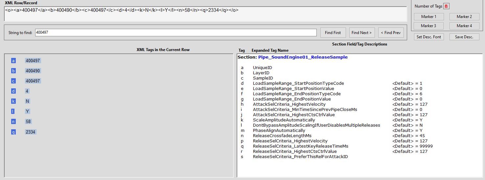
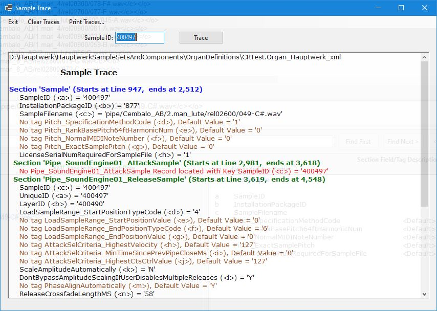

A second difficulty in understanding how sound will be processed
based on casual inspection of an ODF is caused by the extensive
reliance upon implicit defaults. Several of the Sections named
above are comprised of a great many Fields, but often their ODF
Records only carry Tags for a small number of Fields: the rest are
filled in by implicit default values, which are often significant
to the processing. Compressed-ODFs do not contain references to
these implicit, default-valued Fields. Tracing fills in these
missing details, by presenting every possible Field defined for a
particular Section's Records, and showing both explicitly defined
Fields whose values are taken directly from the ODF, and implicit
default values, supplied by HW internal logic when a given Field
does not appear in a Record, or appears but is without a value.
There are two ways to access Sample Tracing: through the menu
item menu
> Tools
> Trace
a Sample; through the Trace Sample
button that is displayed whenever the selected Row/Record is a
Sample Record. Both methods invoke the same Sample Trace
form. They differ in that when the user invokes Tracing through
the menu, the form's input field for Sample ID is
initially blank, and the user is responsible for typing or pasting
in the desired SampleID, then clicking the Trace form's Trace
button to initiate the Trace; when using the main form's Trace Sample
button, AECHO copies the SampleID from the current ODF record into
the Sample Trace form's input field and initiates the
Trace directly - saving keystrokes and reducing the chance
entering the wrong SampleID.
The following screen snapshot show the impact of Trace. The
Sample with SampleID "00497" was originally selected from the ODF.
It contains a linkage with a Release Record, which has been
subsequently selected, and is shown in the snippet below:
|  |
| A ReleaseSample Record, Associated with a
Sample Record |
|  |
| Sample Trace Form |